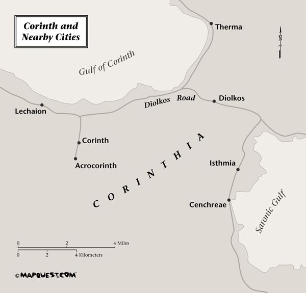

Paul and the Christians in Corinth
More than perhaps any other correspondence in the NT, Paul’s letters to the Christians in Corinth give us insight into the kinds of problems Paul encountered in proclaiming the gospel of Jesus Christ to a culture that had very different values and practices. Paul visited Corinth a number of times and exchanged a lively correspondence with the Christians there, some of it preserved for us in the NT. The letters we have present a picture of the complex relationship between Paul and the Corinthian Christians. Because it is complex, it is at times difficult to unravel, but we shall consider the evidence we have and sketch out a picture of those relationships. This will give us a chance to look at Paul the apostle in action and at how he confronts theological and ethical problems within the Corinthian Christian community.
Corinth was situated on a narrow neck of land some four miles wide connecting the Peloponnesus to the south with the Greek mainland to the north. It thus occupied a strategic location for north-south trade routes that had to pass through it either way. It also opened to the Aegean Sea to the east and the Adriatic Sea to the west. The port to the Aegean Sea, Lechaion, lay in the Gulf of Corinth directly to the north of the city and was connected to the city by a road with walls on both sides. The port to the Adriatic Sea, Cenchreae, lay seven miles west of Corinth. It was the site of the home church of Phoebe, who carried Paul’s letter to Rome (Rom 16:1). To spare ships the long and sometimes dangerous voyage to the south around the Peloponnesus, a road, the Diolkos, had been constructed to carry goods overland between the two ports. Thus a ship could be unloaded at one port, its goods carried overland, and then reloaded onto a ship at the other port. Smaller ships were carried across the isthmus on wheeled vehicles; tracks were cut into the Diolkos for that purpose. Because of the inconvenience of unloading and reloading ships at the two ports, there were regular proposals to dig a canal through the isthmus; Julius Caesar proposed to do it (Plutarch, Caesar 68.4) as did Gaius Caligula (Suetonius, Gaius 21). This was proposed so often that it became a regular point of speculation, along with enlarging the harbor at Ostia or whether there was land to the west beyond the ocean (Quintilian, Institutiones Oratoria 3.8.16).

Corinth grew rich from the commerce passing through, and the city was famous for the constant presence of many sailors. Like any town, ancient or modern, where sailors congregated, certain characteristics emerged, among them women of easy virtue. The orator Dio Chrysostom remarked that large numbers of people gathered at Corinth because of the good harbors and the “female companions,” (Discourse 8.5) and noted that Corinth was known for its elegant and expensive women, leading to the proverb “Not every man can afford the trip to Corinth” (Discourse 20.7). The name of Corinth became the base for words coined to refer to various forms of sexual behavior.
Corinth was also noted for a metal compound termed “Corinthian bronze,” an amalgam of gold, silver, and copper or bronze. Corinthian bronze was supposedly created by accident, either when Hannibal conquered Illium and burned its treasures (Petronius, Satyricon 50) or when a house containing quantities of gold, silver, and especially copper accidentally burned down (Plutarch, Oracles 395.2). Collectors drove the price of objects made of Corinthian bronze to great heights, much to the disgust of Seneca (On Shortness of Life 12.2; Helvia on Consolation 11.3). The Corinthians often put capitals of Corinthian bronze on pillars, giving rise to the “Corinthian” capital (Pliny, Natural History 34.7.13), a capital later reproduced in stone.
Finally, like other important ancient Greek cities, Corinth had its games, the “Isthmian Games,” which, like the Pythian and the Olympian games, were held at regular intervals and attracted large crowds.
Corinth’s site had been occupied for some 4000 years when Paul visited there, particularly the high hill (567 meters) in the southern part of the city, the “Acrocorinth” (Greek for “high Corinth”). Corinth had been conquered and destroyed by the Romans in 146 B.C. and lay in ruins for over a century. It was refounded by Julius Caesar in 44 B.C. as a colony for retired veterans of the Roman legions. This recent new beginning meant that there were no old, landed families residing there and therefore that the newly rich had more upward social mobility than in most other Roman cities. This in turn made this city with a dynamic commercial sector more open to new ideas. Its importance increased until Augustus made it the capital of Achaia (the southern half of the Greek peninsula; the northern half was called Macedonia). It was therefore the residence of a Roman proconsul, who during one of Paul’s visits was Gallio (Acts 18:12), the brother of the famous Roman philosopher and literary figure Seneca.
In many ways, the city of Corinth Paul knew was closer to a modern American city than almost any other ancient city. The upward social mobility conferred by large amounts of money, the large athletic spectacles, the love of parties, the problems created by a loosening of sexual limits, the desire to be as inclusive as possible in religious beliefs and practices, the desire to include social customs from secular life into the Christian communities — all of these give to the problems discussed in the Corinthian correspondence an immediacy not always present in ethical discussions contained in the NT letters.
A reconstruction of central Roman Corinth
1. Road to Lechaion
2. Monumental Arch
3. Basilica
4. Market
5. Baths
6. Peribolos of Apollo (built in the late first century CE; before that, a possible location of the “meat market” of 1 Cor 10:25)
7. Pirene Fountain
8. Julian Basilica
9. Bema (the “tribunal” of Acts 18:12)
10. Market
11. Altar
12. Stoa
13. Basilica
14. Forum
15. Temple of Venus Victrix
16. Temple of the Cults of Rome, the Emperor, and the Senate
17. Fountain of Poseidon
18. Monument of Cn. Babbius Philinus
19. Temple
20. Temple of Tyche
21. Market
22. Temple of Apollo (sixth century BCE)
23. Market
24. Shrine of Athena Chalinitis
25. Temple
26. Glauke Fountain
27. Market
28. Temple
29. Odeion (built after Paul’s time)
30. Theater
From N. Papahatzis, Ancient Corinth: The Museums of Corinth, Isthmia and Sicyon (Athens: Ekdotike Athenon, 1981); for detailed information see http://corinth.sas.upenn.edu.
13.2. THE CORINTHIAN CORRESPONDENCE
Unlike Romans, where the secretary Tertius who took down Paul’s dictation adds his own greetings at the end of the letter (16:22), a secretary is not named in either 1 or 2 Corinthians. But Paul’s note that he appends a greeting in his own hand at the end of 1 Corinthians (16:21–23) indicates that he followed the usual ancient custom of dictating the letter to another person. It may well be that Paul also wrote the benediction with which 2 Corinthians closes with his own hand, but that remains a matter of speculation. It is likely, from Paul’s comments on Timothy (16:10–11), that Timothy carried the letter to Corinth, perhaps accompanied by some others (16:12b). No deliverer is mentioned in 2 Corinthians.
The major literary issue concerning the Corinthian correspondence is the number of letters Paul wrote to the Christians in that city, and how much of that correspondence we still possess. A review of the evidence will show the scope of the problem.
It is clear from 1 Cor 5:9 that our 1 Corinthians is not the first letter Paul wrote to that city. This verse refers to a letter Paul wrote to them prior to the letter we have as 1 Corinthians, a letter that had given them some advice about wrongful association with immoral people that they had misinterpreted. In many ways, the difficulty reflected in that reference to an earlier letter sets the tone for the rest of the correspondence, for the letters we have show such misunderstanding to have been a relatively common occurrence between Paul and the Corinthian Christians.
It is interesting that 2 Corinthians 6:14–7:1 seem to intrude into its present context and concerns precisely that same problem of wrongful association. Signs of textual intrusion are that these verses appear to interrupt their context in 2 Corinthians 6–7, that they make sense in themselves, and, some would argue, that the text of 2 Corinthians 6–7 flows more smoothly when 6:14–7:1 are removed. On that basis, many have argued that we have in these verses in 2 Corinthians a fragment from that first letter to Corinth mentioned in 1 Corinthians 5:9. Be that as it may, 1 Corinthians is the second letter Paul wrote to the Christian communities there.
In addition, Paul mentions in 2 Cor 2:4 a so-called “letter of tears” and refers to it again in 7:8. Its description does not at all sound like our 1 Corinthians. Therefore it is yet another letter Paul wrote, for our purposes a third one.
The letter we know as 2 Corinthians is then a fourth letter. Yet it has a decided break in its tone between chs. 9 and 10. The first part is relatively irenic in tone, whereas chs. 10–13 are quite sharp, laced with sarcasm and irritation. As some scholars have shown, one can identify the content of chs. 10–13, on the basis of Greek rhetorical categories, as a complete unit. Because of the change in tone, many scholars have proposed that these chapters are the harsh letter to which Paul refers in 2:4.
We thus know for sure of four letters. While there are good arguments for the unity of 2 Corinthians, which we will consider later, some things proposed in chs. 1–9 are known to have been completed in chs. 10–13. Thus chs. 10–13 may represent a fifth letter.
Not only did Paul write to the Corinthians; they wrote to him. It is clear from references in 1 Cor 7:1 that Paul had received a letter from Corinth that posed a number of questions for him to answer (see 7:1; 8:1; 12:1; 16:1). It seems likely that the letter was delivered to Paul by Stephanas, Fortunatus, and Achaicus (16:17), with an additional visit by “Chloe’s people” (1:11), who then reported additional information and described some additional problems occurring in the Christian communities in Corinth. The matters reported by Chloe’s people are discussed in the first seven chapters.
There was thus a lively correspondence between Paul and the Corinthian Christians. As we have seen, the evidence in the Corinthian correspondence makes clear that we do not possess all the letters Paul wrote (see also Col 4:16, with its reference to a now lost letter to the Laodiceans). One can hope that at some point further letters will be discovered in some hidden place, perhaps somewhere in the Egyptian desert, where so many other ancient manuscripts have been found in recent decades!
When we read the Corinthian correspondence that we have, we find ourselves in the midst of Pauline ethical thinking. And it is clear in such a reading how closely Paul’s theological and ethical thinking are related to each other. The material dealt with in this correspondence concerns what can only be described as theological points central to the Christian faith: the relationship between Christ and the sinful world, the meaning and conduct of the Lord’s Supper, the import and reality of Christ’s resurrection, the relationship between Christians and Jews, and the power and presence of the Holy Spirit, to name but a few. Yet at the same time the letter is immersed in discussions of key ethical questions: marriage and sexual relationships, relationships among Christian and between Christians and non-Christians, the practice of initiating lawsuits, and the use of one’s material wealth, among others. It is clear in this correspondence, therefore, that ethics and theology cannot be treated separately. All of Paul’s theological points have ethical implications, and all the ethical discussions imply and presume theological foundations. For that reason, to study the Corinthian correspondence is in a profound way to study not only the content of Paul’s ethical thinking, but his method of doing ethics as well. The center of both theology and ethics is Christ, crucified but risen, and reigning over all creation. Paul’s preaching and writing, his ethics and his theology, are attempts to come to terms with that reality and what it means for life in our world.
13.3.1. The Origin and Themes of the Letter
1 Corinthians was written while Paul was in Ephesus in the Roman province of Asia (1 Cor 16:8; cf. v. 19a). When it was written can be determined a little more closely than with some other Pauline letters. Because Paul mentions the collection for the “saints” in Jerusalem (1 Cor 16:1), we know that 1 Corinthians, like Romans, which also mentions the collection, must have been written after the meeting between Paul and some other apostles in Jerusalem (Gal 2:1–10), where it was agreed that Paul should assemble such a collection.
How long after that meeting 1 Corinthians was written is difficult to determine, however. Acts 18:12 reports that Gallio was proconsul during Paul’s lengthy stay in Corinth (a year and a half according to Acts 18:11). Toward the end of that visit, Paul was set upon by some Jewish opponents and haled before Gallio on charges growing out of Paul’s missionary preaching (Paul “persuaded” people to worship God in ways that were contrary to the Jewish law). Because the charges were religious, Gallio refused to intervene. These events are significant for dating the Corinthian correspondence because Gallio’s proconsulship can be validated from existing Roman records: it is mentioned in an inscription recording the emperor Claudius’s twenty-sixth accolade as “imperator,” which occurred in the first half of 52 C.E. This puts Paul in Corinth around the years 52–53. He must have written 1 Corinthians, then, after he had left Corinth and, apparently, gone to Ephesus (so Acts 19:1), therefore no earlier than 53. We do not know how long Paul had been in Ephesus when he wrote, but we may assume it was not long. Hence a date around 53 or 54 is a reasonable conjecture for 1 Corinthians.
The letter follows the customary Hellenistic form, with Paul’s usual adaptations. That form includes the letter opening (1:1–3), the prayer (1:4–9), the letter body (1:10–16:4), and the letter closing, with the usual travel plans (16:5–10), greetings from others (16:11–20), and the final salutation (16:21–24).
Although Paul is answering a variety of questions and attempting to adjudicate a number of different problems, two themes predominate. One is the profound difference between the standards of the world and the standards revealed in Jesus Christ. As Paul makes explicit in the first part of this letter, what is reckoned as powerful and wise by the world is proved to be weak and foolish when compared to the divine wisdom revealed in and portrayed by Christ, just as what the world reckons as foolish and weak turns out to be the wisdom and power of God. The reality that demonstrates this fact is the cross of Christ. The cross was the instrument of ultimate degradation in the Greco-Roman world. It was reserved for slaves and non-Roman citizens. Death was slow and extraordinarily painful, with the person ultimately dying for lack of water. After death the body was frequently allowed to remain on the cross, its decay and stench to remind passersby of the futility of attempting to oppose Roman power. It was precisely this instrument on which Christ died, thus proving in the eyes of the world the futility of all Christ’s claims and revealing him to be weak and foolish over against Roman power. Yet that death was not defeat but victory, as Christ’s resurrection proved, with his death being the means by which God overcame the power of sin and death. Thus the cross proved to be the instrument of God’s wisdom and power in dealing with sinful human beings. It is the logic drawn from that reality that informs Paul’s descriptions and judgments in the first portion of 1 Corinthians.
The second theme is the lordship of Christ and is derived from the first. That Christians acknowledge Christ’s lordship makes it impossible for them to acknowledge any other lordship, religious or political. It therefore makes it impossible for them to participate in the rites of other religions or to follow the customs of secular society in the Greco-Roman world. To do so is to fall back into the realm ruled over by sin and death. In principle, Christ’s lordship renders null and void all other lordships, and it is that fundamental fact that led the Corinthians to the conclusion that, since secular customs and society had been negated, their behavior in that society made no difference. Their freedom from that society in Christ, so they reasoned, gave them freedom to do as they wished. Paul is at pains in this letter to make clear that along with that divinely given freedom come responsibilities to obey the will of the God under whose lordship Christians now live. They do not belong to themselves, free to do as they see fit; they belong to Christ, and are therefore under his lordship (7:22–23a). What that means Paul spells out in the second half of the letter.
Finally, it is worth noting that the gospel Paul preached was not unique to Paul, as is indicated by his use of common Christian traditions in this letter. Paul commends the Corinthian Christians for their adherence to the traditions he delivered to them (11:2), and in the course of his discussions he recites two of them — one concerning the institution of the eucharist (11:23–26), the other concerning Christ’s death and resurrection (15:3–7). Paul introduces these traditions with the technical Greek words for receiving (paralambanō) and handing on (paradidōmi) traditions. We know that these traditions constituted part of Paul’s original proclamation to the Corinthians because in both instances he says that he handed them on earlier.
Paul thus belonged to the total Christian mission, and used traditions known to others as well, just as he was accompanied on his missionary travels by other Christian preachers, in the case of 1 Corinthians, by Sosthenes (1:1). Paul was not a kind of “lone wolf,” avoiding all contacts with other Christian preachers. He was rather part of the total apostolic mission to the Greco-Roman world.
13.3.2. The Content of the Letter
After the letter opening (1:1–3) Paul utters a prayer of thanksgiving to God for the gifts given the Corinthian Christians. The two mentioned, knowledge and spiritual gifts, are also part of the problem in which the Corinthians are involved, namely, their misuse of those gifts. Thus, as so often, Paul summarizes the problems he is addressing at the very outset of the letter.
The first problem Paul addresses (1:10–4:21) concerns the report from Chloe’s people that the Corinthian Christians have divided themselves into quarreling factions in their apparent attempt to be identified with the most powerful Christian figure. After pointing out that such factional identifications are intolerable because they make Christ a cause of division rather than the one who saved and united them, Paul develops the theme of the contrast between what the world regards as wise and powerful and what Christians know to be wise and powerful through God’s act in Christ. This contrast shows that their desire to be identified with powerful figures betrays a lack of understanding of the very heart of the Christian faith. Paul reminds them that the contrast between the values of the Greco-Roman world and the values embodied in the Christian faith was the theme of his preaching among them from the beginning (2:1–5), and it was matched by how he preached: not as a wise man but as one clothed in weakness, so that the Corinthians’ confidence should not be placed in the wise Paul but in the crucified Christ. In that way the power of God’s Spirit can become manifest.
It is apparent in this discussion that there were those who were criticizing Paul either for his inability as a speaker, for the lack of “wisdom” in his message, or both. Paul points out that his manner of speaking was intended to complement his message (2:1–3) and that in fact he does bring wisdom, but a kind of wisdom not immediately apparent to those who have just accepted the Christian faith, since their definition of wisdom is still attached to their former cultural values (2:6–8; 3:1–3, 18–20). For that reason he is indifferent to the judgment leveled against him and his missionary message (4:3–5) since it comes from people who have vastly overestimated their own importance in and understanding of the Christian faith (4:8–13). They must realize that the disreputable things that happen to Paul in the course of his missionary preaching happen because he embodies the message he proclaims: that weakness and foolishness in the eyes of the world are in fact wisdom and strength in Christ. Paul concludes by noting that he will visit them again in the near future, and that their conduct will determine whether he comes as friend or as one who must chastise his wayward children (4:14–21).
In a second section (5:1–6:20), also responding to the report delivered by Chloe’s people (5:1), Paul addresses some activities among the Corinthian Christians that have resulted from a mistaken understanding of the meaning of Christian freedom (6:12). Of the three activities Paul addresses, the first concerns a young man living with his stepmother (5:1–13). Paul does not mention why these two people feel they can flout moral conventions valid even among non-Christians. There is a Jewish tradition, however, that when non-Jews become proselytes and take on the yoke of the Jewish law, they are to be regarded in the same way as newborn babies, and hence any prior relationships are nullified. It is clear enough that Paul also felt that when one becomes a Christian, old things have passed away and all things have become new (2 Cor 5:17; see also 1 Cor 6:9–11), and it is likely that he told the Corinthians this in the course of his gospel proclamation. Perhaps these two people felt that, having become Christians, their old relationships had been severed, so that they were free, as newborn Christians, to assume new relationships as they pleased. Instead of being ashamed to have this practice in their midst, apparently some Corinthian Christians found it a reason for boasting (5:6), perhaps as a radical example of the exercise of their new Christian freedom. Paul will have none of it. People who do such things are to be removed from the Christian community (5:2b, 13b), as Paul reminds them he had told them in an earlier letter (5:9–13).
The second activity Paul addresses is the readiness of Christians to sue one another in Roman courts (6:1–12). Such litigiousness represents defeat for the Christian community, Paul argues, because it shows that they are unable to base relationships in their community on their new way of life, that they have not adopted the kind of familial love necessary for the new Christian family (6:8).
Paul’s summary of his advice in these two matters is summed up in 6:9–11: people who act in a way that severs their relationship with God (i.e., who become unrighteous) will not inherit God’s kingdom. Such acts include sexual as well as social perversions, a few of which Paul lists in these verses (for a similar list, see Rom 1:24–32).
In addressing a third activity, Paul quotes a saying — “All things are lawful for me” — that some Corinthian Christians were apparently applying as license to do what they wanted in the physical realm. Perhaps they reasoned that, since God is Spirit, what counts in life is what one does in the spiritual realm, so that one is free to do whatever one wants with the body, since it will be abandoned in the resurrection, when it will be transformed into a spiritual body (see Paul’s discussion in ch. 15). Paul concedes that some of the activities thus justified may be lawful, but argues that they are not helpful. Indeed, Christ has taken possession of the Christian soul and body, and as a result one’s body also belongs to Christ. Therefore, sexual immorality of any kind is to be avoided, including fornication (6:15) and homoerotic sexual contact (6:9). The presence of God’s Spirit within Christians means that they must use the body as a temple of God’s holy Spirit, who has now taken possession of them through Christ’s death on the cross (6:19–20).
With the conclusion of that discussion, Paul turns his attention to matters raised in the Corinthians’ letter to him. It has already become clear that the loose sexual practices of their seaport city have influenced how the Corinthian Christians have lived and have raised questions about how they must now live. Perhaps some felt that absolute sexual abstinence was the only way to react to the kind of immorality they abandoned when they became Christians, just as others seem to have felt that since they were now spiritual, sexual immorality no longer mattered. Paul’s basic advice is that if celibacy is not possible for an individual, marriage is perfectly acceptable. What is not acceptable is any kind of sexual contact outside the bonds of the marriage of a man and a woman. One problem underlying this discussion was the tensions that arose when one partner in the marriage became a Christian and the other did not. Paul calls on the authority of a word from Jesus (perhaps the one also remembered in Mark 10:2–9) to argue that, if possible, the couple should stay together, but then Paul adds his own opinion. Ultimately, he says, it depends on the non-Christian partner. If that person wants to separate, the Christian spouse should let it occur, though remaining together is preferable (7:10–16). Saying that a Christian married prior to conversion should remain married leads Paul to reflect on the fact that all Christians should remain in the social status they had when they became Christians (7:17–24).
Paul then turns to advice to those not yet married (7:25–40), where, he admits, he knows no applicable saying of Jesus. He sees nothing against marriage; to be married is certainly not to sin, and those who feel compelled to be married should do so with a clear conscience (7:36, 38). But because Paul thinks the return of Christ is imminent (7:29), he advises that it is better not to take on additional responsibilities in light of that impending crisis. It is clear from this discussion that Paul does not think sexual activity is inherently sinful, but he is strongly convinced that the only appropriate opportunity for acceptable sexual behavior is within the bonds of marriage between husband and wife.
The next point raised in the Corinthians’ letter that Paul discusses concerns a Christian’s attitude to food offered to idols (ch. 8). Since most of the meat that found its way to the public meat market had in fact been slaughtered at the temple of some Greco-Roman god or goddess, the question of food offered to idols would arise whenever a Christian bought meat. There was an additional problem. Apparently some of the Corinthian Christians, prior to their conversion, had belonged to communities that worshipped one or more of these Greco-Roman deities and in the course of such worship had eaten food in the temple that had been sacrificed there. Consumption of such meat, even by Christians, seemed very much to signal that they had abandoned Christ and reverted to their former idolatrous way of life. Furthermore, it frequently happened that the only available larger rooms for private celebrations such as birthdays, weddings, and the like were in temples (often the basement). Temple authorities added to the income of the temples by renting out these rooms. A Christian might be invited to join old friends for such a celebration, and if food were served, the question would be raised for the Christian whether he or she could eat it and not fall back into idolatry.
Paul’s answer is, basically, that Christians whose consciences are clear because they know they have been delivered from the realm of idols by Christ are free to eat any such food. The one limitation arises from the danger that eating such food may tempt Christians with weaker consciences to participate, and then they might feel they have in fact betrayed Christ. Thus, it is consideration for the fate of weaker Christians, not any quality inherent in the food, that is to determine how one acts in this regard. A fellow Christian, Paul says, is more valuable than the exercise of a freedom that may offend, however legitimate that freedom may be.
Interposed into this discussion of how Christians are to conduct themselves with respect to food sacrificed to idols (which is continued in 10:1–11:1) is a discussion of Christian freedom. It is prompted by what seem to be questions about Paul’s legitimacy as an apostle, a topic more directly addressed in 2 Corinthians but apparently already present when Paul wrote 1 Corinthians. The issue seems to be his refusal to accept living expenses from the Corinthian Christians while he was carrying on missionary work among them. He defends the right of a Christian proclaimer to such support (9:3–12), but also defends his right to refuse it (9:13–18) so that he may be free to preach the gospel as he sees fit. Paul points out that this is his principle in all his missionary work: he willingly assumes obligations he need not have taken on in order to make his gospel more acceptable (9:19–23). He is apparently unwilling to place himself under any monetary obligation to the Corinthian Christians lest they try to use that obligation to get him to modify his views on what the gospel means for their lives as Christians.
After a brief paragraph exhorting the readers to stay the course of their Christian life as he himself does (9:24–27), Paul returns to the dangers of participation in idolatry. Against some who apparently argued that participation in the Christian eucharist insulated them from any danger involved in participating in idolatry, Paul argues that the Jews also shared such spiritual food and drink at the time of the exodus from Egypt, but that did not insulate them from the evil consequences of abandoning the way of life God had given them (10:1–13). If eating food sacrificed to idols is permissible (10:25–30), participation in cultic meals honoring idols is not (10:14–22). Idols may not be gods, but, Paul says, they do represent demons, and Christians cannot be partners with demons. Christian freedom does not reach that far. But even within the realm where Christian freedom prevails, the good of one’s fellow Christian should determine the bounds of one’s own freedom. Surely Christians are free to eat what their consciences will allow them; they are not bound by some else’s conscience (10:25–30). But such freedom finally is not to be used to seek one’s own advantage, that is, to satisfy one’s own desires. It is to be used to glorify God (10:31).
Paul turns next to conduct in Christian worship (11:2–34). It is not clear whether this question was raised in the letter from the Corinthians or whether Paul heard of problems in their church by some other means. He is concerned with two problems relating to worship: how participants in worship are to clothe themselves (11:2–16) and how the eucharist is to be celebrated (11:17–34). The first problem concerns primarily who is to have their heads covered in worship. For reasons that remain obscure to us, Paul is adamant that when men utter prayers or “prophecy” (the latter almost certainly meaning preaching or exhortation) their heads are to be uncovered, whereas when women exercise those functions in public worship, their heads are to be covered. Roman men normally covered their heads during some cultic celebrations (Plutarch, The Roman Questions 266B.C-D), but had them uncovered during others (e.g., when worshiping Saturn or a god named “Honor”; so Plutarch, The Roman Questions 266E-267A), so there is no help from that quarter in understanding the problem Paul is discussing. Long hair on a man was, among other things, the mark of a philosopher, but again there was apparently no stigma attached to long-haired men or short-haired women. Stoics talked much about living in conformity to nature, as Paul argues in this instance (11:14–15), but there is no record that they identified what is “natural” with hair length. We simply do not know the background of Paul’s arguments here. But it is important to note that there is no question about women participating in worship through the public utterance of prayers or preaching/admonitions. That point will become important a little later in the letter.
The problem concerning the celebration of the eucharist (11:17–34) is clearly related to Roman custom, however, and it relates to Roman practices at banquets in private homes. Roman houses would not have had a room large enough for all Christians to be in it, so the eucharist was probably observed with people located in several rooms as well as in the atrium. In secular Roman practice, people were seated in various rooms according to their social status, and different foods were served at different times to each room (e.g., Dio Chrysostom, Discourse 30.30). Complaints were common (e.g., Juvenal, Satire 5.99–104, 146–53, and the text from Martial below). Important guests were served first, and then the others in descending order of importance. It appears that such customs may have been imported into the house churches when the meal and the accompanying eucharist were celebrated in Corinth, even to the point that some people drank too much wine (11:17–22). Paul says that such conduct is not acceptable and reminds the Corinthians of the origin of the Lord’s Supper as he had told them earlier (11:23–26). After warning them of the dire consequences of their present eucharistic practices (11:27–32), Paul urges that all eat at the same time; if anyone is unhappy with this arrangement, Paul invites them to eat their fill at home (11:33–34).
Paul returns to the letter that was sent to him, now responding to questions about spiritual gifts. Pointing out first that the Spirit never prompts anyone to curse Christ and that only by the Spirit’s prompting can anyone confess Christ as Lord, Paul then discusses the various kinds of spiritual gifts. Apparently the Corinthian Christians thought there was a hierarchy of spiritual gifts, with some more important than others; speaking in tongues (glossolalia) was regarded as the most important. Paul points out that since all gifts come from the same Spirit, all are of the same value (12:4–11). Furthermore, just as the human body needs all the functions of its parts to perform as a body, so the Christian community, as the body of Christ, needs all the spiritual gifts of its members if it is to function correctly (12:12–26). Paul concludes by pointing out that not all members share all gifts (12:27–30), and then informs his readers that the highest gift of all is love.
1 Corinthians 13 is often called a hymn; it does indeed show exalted language and poetic turns of phrase. Two things are noteworthy about this hymn, in addition to its beauty of phrase and language. The first is that the word for “love” that Paul uses, agapē — and here he follows usual Christian custom — was a fairly rare word in the first century. The more common words for love are erōs, which is love, often intense, awakened and driven by the value or desirability of the object loved, and philia, close in meaning to “friendship,” which is a general affection for something pleasing. Christians filled the word agapē with the sense of a love that confers value on its object, which may otherwise be quite unlovable. Thus God’s love for human beings confers value on human beings otherwise made quite unlovable by sin. That is the love Paul describes in 1 Corinthians 13. The second thing noteworthy about the hymn is that one can virtually substitute “Jesus Christ” for “love” and thus discern the source of Paul’s description of love, especially in vv. 1–7. In the remainder of the chapter Paul compares the divine gift of love with gifts the Corinthians apparently valued most highly — prophecy, tongues, and knowledge. Compared to love, these gifts are evanescent and belong to the childhood of the faith. Even compared to faith and hope, Christian love is paramount.
In ch. 14, Paul returns for a lengthier discussion of the gift of tongues. The essential point Paul wants to make is that speaking in tongues without an interpretation of what has been said is of no value to the Christian community. In the absence of an interpretation, a message in tongues can only cause confusion. The desire to avoid the confusion caused by uninterpreted glossolalia leads Paul to discuss more broadly the necessity for order in worship (14:26–33a). And that in turn leads him to a comment on the participation of women in such services (14:33b-36). Here, it appears, Paul is ordering a particularly divisive group, the women, to maintain silence during public worship services. He ends by chiding them that by seeking to dominate the worship services, they act as though they alone had received a word from God.
The problem with such an interpretation is twofold. First, until this moment, Paul has not mentioned any problem concerning women dominating the worship services, so it is strange that such a problem would surface now. Second, and of far more importance, the Greek text will not allow such an interpretation. Greek is an inflected language, which means that the gender of adjectives must agree with the gender of the words modified. In v. 36, the word translated “only ones” is, in the Greek text, masculine! That means Paul has addressed this condemnation not to women, but to men! The Greek makes clear that it is men who act as though they alone should be allowed to speak, and it is to them that this rebuke is addressed. It is therefore evident that what Paul does here is what he regularly does in this letter: in 14:33b-35 he quotes what some Corinthian Christians have been saying, and then refutes it (see 6:12–13; 8:4–6; 10:23; 15:35–36; cf. 4:8). Paul is therefore not telling women that they are not to participate fully in worship; he has already assumed that they will do so (11:4–5). He is telling the men who apparently want to restrict women, the men whom he quotes vv. 33b-35, that such an attitude is not to be tolerated since they, the men, did not originate God’s word, and that they are therefore not the only ones to whom God’s word has come. Hence, they have no right to try to bar women from full participation in public worship. Paul knows that women play an important part in the work of the Christian communities; the women mentioned in Romans 16 confirm that. And here Paul is making sure that the women in Corinth have the opportunity to continue to do so.
Paul then turns to a topic on which in his estimate the validity of the entire Christian faith depends: the bodily resurrection of Christ. It is clear that some Christians in Corinth have denied Christ’s resurrection, apparently on the general ground that resurrection from the dead is impossible (15:12). But if Christ has not been raised, Paul asserts, the entire substance of the Christian faith is denied (vv. 13–19). After discussing how resurrection will occur at Christ’s return in glory (vv. 20–34), Paul confronts a second problem among the Corinthians: What kind of body is it that is raised, since the physical body rots away in the grave? Paul argues that just as physical bodies are not all the same, so the risen human body will not be the same as the one that died. It will be, he says, a spiritual body rather than a physical body (vv. 35–50). Paul concludes with a recitation of events to occur with the return of Christ, when the riddle of the resurrection will finally be solved and death will be eliminated (vv. 51–57). Knowing that, the Corinthians may confidently continue their work of evangelizing their city (v. 58).
The final topics Paul addresses are the collection for the Christians in Jerusalem and his travel plans. As will become apparent in 2 Corinthians, events had caused these plans to be altered, which got Paul into no little trouble with his opponents among the Christians in Corinth. The final part of ch. 16 (vv. 15–20) attests the lively interchange between people around Paul and the Christians in Corinth: Timothy, Apollos, Stephanas, Fortunatus, and Achaicus all play a part in this interchange. Roman hegemony over the lands surrounding the Mediterranean Sea made travel relatively easy, and that aided the Christians in their endeavors to bring the gospel of Jesus Christ to the whole known world.
The letter concludes with greetings (16:19–20) and some sentences written out by Paul himself (16:21–23). The “holy kiss” (16:20) was a regular practice in early Christian communities (see Rom 16:16; 2 Cor 13:12; 1 Thess 5:26; 1 Pet 5:14) and was intended to demonstrate the close familial ties that bound Christians together.
13.4.1. The Writing of the Letter
Once more, there is little question that Paul wrote the material contained in our 2 Corinthians. The only real question is whether it was originally a unity or contains portions of a number of letters. Most frequently suggested is that 6:14–7:1 is an intrusion into its present context and originally part of Paul’s first letter to Corinth (see 1 Cor 5:9) and that chs. 10–13 are independent from chs. 1–9, primarily because of the change in tone and attitude to the Corinthians, mild in chs. 1–9, harsh in chs. 10–13. Others have proposed that chs. 8 and 9 belong to separate letters since they deal with the same content (the collection for Jerusalem).
There is no manuscript evidence of the material in 2 Corinthians appearing in any other form, of a letter conclusion at the end of chs. 1–9, or of a letter opening in chs. 10–13. Therefore, many prefer to see 2 Corinthians as a unity, written in essentially the form we have it. As we shall see below, chs. 10–13 must have been written after chs. 1–9 and so could not have been part of the harsh letter described in 2:3–4, 9; 7:8, 12, which is also described in a way that would not fit 1 Corinthians. So it is clear the harsh letter was sent after 1 Corinthians and before 2 Corinthians.
Paul was in Macedonia when he wrote 2 Corinthians (2:13; 7:5). He had founded churches in two Macedonian cities that we know of, Thessalonica and Philippi, so he could have been in either city. Given his warm relations with the Christians in Philippi (e.g., Phil 1:5, 7–8; 4:14–16), that is perhaps the more likely city, though we cannot be certain. The date assigned to 2 Corinthians must allow for events that occurred between 1 and 2 Corinthians — Paul’s painful visit to Corinth (2:1), the composition and delivery of the harsh letter, the dispatch and return of Titus with news about the reception of the harsh letter (2:13; 7:6, 7), and finally the composition of 2 Corinthians. Some nine to twelve months would allow for these events, so 2 Corinthians must have been written about a year after the composition of 1 Corinthians, perhaps in 55 or 56.
Why Paul wrote this letter is tied up with events between 1 and 2 Corinthians, which we must examine in some detail. In fact, things had gone badly for Paul between the time he concluded 1 Corinthians and wrote the opening chapters of 2 Corinthians. He had suffered reverses in his mission in Asia, that is, Ephesus, and in relation to the Corinthians themselves. He had announced his plans to stay a while longer in Ephesus because he saw good prospects for his mission there (1 Cor 16:8–9), but something had gone terribly wrong (2 Cor 1:8–9a). Acts notes difficulties there with silversmiths and an ensuing uproar before Paul’s departure (19:23–20:1), but nothing to account for the language in 2 Corinthians, which describes a deadly peril facing Paul. In addition, Paul had apparently gone directly to Corinth instead of going first to Macedonia, as he had earlier said he would (1 Cor 16:5). Paul’s opponents in Corinth saw this change in plans as evidence of Paul’s general unreliability (2 Cor 1:15–17). That visit had also proved disastrous, with someone confronting Paul in a way that caused him great pain (2:1–5). Paul then left Corinth for Troas, where his work was successful (2:12; unfortunately, we have no correspondence to Troas from Paul, so we know nothing about any church he founded there). But after he had left Corinth he had sent a harsh letter (2 Cor 2:4; 7:8), delivered to them by Titus. Even Paul’s success in Troas could not comfort him until he found out how the harsh letter had been received and how he stood with the Corinthian Christians (2:13). So, looking for Titus, he went on to Macedonia (2:14). There he learned from Titus that his harsh letter had apparently had the desired effect: the one who had challenged Paul was disciplined by the Corinthian community (2 Cor 2:6), and there had evidently been a reconciliation between Paul and the Corinthian Christians (7:6–13; see also 2:14). It was evidently in Macedonia, after receiving this welcome news, that Paul wrote what we now have as 2 Corinthians if it is a unity, or, if not, at least chs. 1–9.
The main problem to which 2 Corinthians is addressed concerns the validity of Paul’s apostolic authority. That question had apparently already cropped up before Paul wrote 1 Corinthians, where he defined his understanding of what an apostle was: one who had seen the risen Christ and had founded a church (1 Cor 9:1–2). Two main issues arise in 2 Corinthians. One is Paul’s unreliability as a person, including his boasting about his own qualifications and his apparent disingenuousness about not accepting payment from the Corinthians but seeking a collection for Jerusalem, which some suspected was for Paul himself. The second is that, instead of the kind of triumph one would expect of a messenger of God’s power, a power shown in raising Christ from the dead, Paul was continually suffering and being persecuted. That was hardly what a triumphant God would allow to happen to a true apostle, or so the Corinthian opponents of Paul apparently argued. It is the burden of 2 Corinthians to refute these charges, a refutation that also provides the letter with its underlying unity of thought.
13.4.2. The Content of the Letter
In form, 2 Corinthians, as we have it, follows the usual Hellenistic letter structure, as does 1 Corinthians, along with typical Pauline adaptations of that form. The letter opening (1:1–2) is followed by the prayer/blessing (1:3–7) with its usual précis of the letter’s contents, the letter body (1:8–13:10), including the announcement of travel plans (12:14; 13:1), and a much shortened letter closing, with a final exhortation (13:11), greetings (13:12), and a final salutation (13:13).
In the first section of the letter body (1:8–2:17), Paul begins his defense by meeting the charges of unreliability. He changed his plans not because of his own whims but because of his relationship with the Corinthians. It was precisely to spare them further pain that he did not pay an immediate second visit to them (1:23). In this first section we catch glimpses of some of the charges leveled by Paul’s opponents: Paul vacillates (1:17), his apostolic commission is invalid (1:21–22), and he lords it over the Corinthians’ faith (1:24). Yet despite these charges, Paul rejoices that his “harsh” letter has had the desired effect of reestablishing good relations between him and the Christian community in Corinth.
In the second section of the letter body (chs. 3–7), Paul begins by meeting the accusation of self-commendation, which, as the letter makes clear, he is nevertheless forced to do to defend himself against charges that his call to be an apostle is invalid (see 1:12; 4:2; 5:11; 6:4; 10:8; 11:16, 30; 12:1, 5–6). It also appears here that some people from outside Corinth have come with letters of recommendation (from Jerusalem? from other churches?) and have sought to undermine Paul’s ministry among the Corinthians (3:1b). His discussion of the superiority of the new covenant in Christ over the old covenant centering in Moses and the law (3:7–18) indicates that these intrusive missionaries may have argued for the continuing validity of the old covenant, like those who opposed Paul in Galatia. Paul argues that Christ is in fact the key not only to the new covenant but also to a proper understanding of the Scriptures of the old covenant.
Paul then introduces a catchphrase that will be the theme for the next chapters, namely, that he is not discouraged, despite failures that he encounters (4:1, 16; 5:6, 8). In fact, such failures are precisely part of God’s plan, to show that the power of the gospel comes not from those who proclaim it, but from God himself. If, despite the weakness of those who proclaim the gospel (“earthen vessels,” 4:7), God’s power still is at work, then it becomes clear what the source of the power is. Just as Jesus’ power was manifest only after his suffering on the cross, so the power of God announced by the apostles comes only through the weakness they display. Thus, Paul’s weakness is precisely the proof that he is a valid apostle. Therefore, Paul is not discouraged by such evidences of his own weakness, because he knows that God, who raised Jesus from the dead, will also give power to the apostolic message and will ultimately redeem the apostles as well (4:8–5:10). Paul again argues that this does not constitute self-commendation on his part (5:12). Rather, he does what he does because Christ controls him, the Christ whom Paul once viewed from the perspective of “flesh,” that is, in opposition to God. Now, however, he views Christ in that way no longer (5:16), since now that he is in Christ, he is a new creature and has been given the task of announcing God’s reconciliation of sinful humanity to himself in Christ. It is that announcement that is the task of an apostle (5:17–21). It is therefore precisely the ill treatment Paul suffers as an apostle that confirms the validity of his call: no one, Paul seems to argue, would go through what he went through if the call to proclaim Christ were not legitimate (6:1–13; 7:2–4; the intervening passage, 6:14–7:1, concerns relationships with unbelievers).
Paul returns in 7:5 to the discussion he broke off in 2:13, namely his joy at the happy outcome of the painful confrontation with the Christian community in Corinth and his subsequent harsh letter to them. With this reconciliation now effected between him and them, Paul can turn to his appeal for funds for the relief of the “saints,” that is, the Christians in Jerusalem, an appeal that comprises the third section of the letter body (chs. 8–9).
Paul had already urged the Corinthian Christians to begin a systematic collection of money, suggesting they put aside a little each Sunday (1 Cor 16:2). He cites the generosity of the churches in Macedonia (Philippi and Thessalonica) as an example to urge similar generosity on the part of the Corinthians. He also uses the example of the incarnation of Jesus, who became a lowly human being, giving up his heavenly glory (see also Phil 2:6–7), and though rich became poor so that others could be enriched (8:9). After urging completion of the offering (8:10–15) so that there may be equality of resources (v. 14; see the discussion on p. 301 above of the collection’s purpose to demonstrate the equality of Gentile Christians with Jewish Christians), Paul tells them he is sending a delegation to precede him to Corinth to pick up their part of the collection (8:16–24).
In ch. 9 Paul discusses the collection again, even though it seems he was finished with it at the end of ch. 8 (so that some scholars have suggested that these two chapters may originally have belonged to two different letters). Paul repeats his intention to send a delegation ahead of himself to collect the gift (9:3–5) and then continues his urging that the Corinthians give generously, assuring them that generosity benefits not only the recipients but also those who give (9:6–15).
The fourth section of the letter body (chs. 10–13) comes as something of a shock, since Paul launches into a vigorous defense of the legitimacy of his apostolic calling, employing sarcasm and using a tone entirely different from that of the first nine chapters. This new tone does not seem appropriate after he has just described his desire that the Corinthians give generously to the collection for the saints, and for that reason many have seen in these final four chapters part of a different letter. However we resolve that issue, it has already been clear in the earlier chapters that Paul’s legitimacy as an apostle was being challenged by some people in the Corinthian Christian community. Here he confronts such challenges head-on and meets the criticisms point-by-point.
The first criticism concerned Paul’s boldness in his letters over against his humility and meekness when he was present in Corinth (10:1–12). He apparently quotes his opponents (10:10), who contrast the strong language of his letters with his poor oratorical ability and weak bodily presence. What the latter refers to we do not know. We have no description of Paul in the NT other than this, so we do not know if he was deformed in some way or generally of small stature. That he was not a skilled orator he himself admits (11:6).
Coupled with this defense is Paul’s answer to the charge that he boasts too much of his apostolic authority (10:9, 13, 15). He points out his right to boast because, unlike those who have come later to a Corinthian Christian community already formed, he was the one who established it in the first place (10:13–14). Thus he at least does not boast about his work while depending on what others have done (10:15–16).
After claiming that these latecomers do not preach a true gospel (11:1–6), Paul turns to another point on which he has been criticized, namely that he has insulted the Corinthians by not accepting payment from them for the apostolic work he has done among them (11:7–15). It is a topic to which he will return. He then returns to his attack on those in Corinth who claim to be superior apostles and disparage Paul (11:12–15). Paul claims that they, in fact, are false apostles. Berating his readers for putting up with the bizarre behavior of these “deceitful workmen” (11:20), he next meets the accusation that he acts like a fool. Fine, Paul says, if fools boast, then let me play the fool and boast (11:16–12:13). Apparently the false apostles have boasted of their status as genuine Israelites; Paul points out they can claim nothing along that line that he cannot claim (11:22). Even their claim to be servants of Christ pales in comparison with what he has undergone as Christ’s servant; Paul lists the almost innumerable dangers he has faced and the punishments he has undergone in the course of his apostolic travels and proclamation (11:23–29), even to the point of having to escape from the city of Damascus by being let down in a basket from a window in the city wall, lest he be seized by the governor of the city.
Further, Paul says, if he must boast he will also boast of the abundance of the divine favors shown him, in this instance in the form of divine visions and revelations (12:1–4). To show his modesty, he describes them in the third person, unwilling to boast about himself except in terms of his weakness (12:5), even though any such boast he might make about himself would be true (12:6). To demonstrate his weakness, he tells his readers about a “thorn in the flesh,” which he further describes as a “messenger of Satan,” given to keep him from becoming too proud of himself as an apostle. Some have speculated that this “thorn” was a bodily ailment, perhaps eye problems (see Gal 4:13–15; Acts 9:9, 18), yet in fact we have no idea what it was. We do not know whether it was physical or spiritual, or permanent or only appeared sporadically. Paul did pray three times to have it eliminated, but to no avail. The Lord’s answer to Paul’s prayer was that it was necessary so that Paul would remain weak, since only in such weakness could he be strong in Christ. Only when Paul was weak would it be apparent that it was by Christ’s strength, not his own, that he accomplished what he did as an apostle (12:7–10).
Paul acknowledges that only a fool would engage in such boasting, yet the Corinthians have forced him to do it by refusing to acknowledge his legitimacy as an apostle equal to the new “super-apostles” who have appeared. He has shown himself in every way to be an apostle, even to the performance of miraculous acts (12:11–12). The only thing he has not done was accept payment from the Corinthians, and he asks sarcastically to be forgiven such wrongful activity (12:13). Yet that raises again the question whether he has been dishonest with them in this matter of refusing payment. Evidently some said that Paul was crafty in refusing payment, intending to raise a much larger collection and then abscond with it (12:14–18).
In the final verses of the letter (12:14–13:10), Paul warns that when he comes to his readers for the third time, he will deal harshly with them if it becomes necessary. It is evident from his language that not all problems have been solved among the Corinthian Christians. The warm and comforting tone of 1:3–7 and 2:14–17 and the assurance that they have proved themselves guiltless (7:11) have now given way to threats that lack of genuine repentance will bring the full apostolic wrath on them (13:2). Paul worries that their faith will prove wanting, and he writes in the hope that he will not have to be severe with them in his use of his authority (13:5–11). Obviously either the situation is different from the one behind chs. 1–9, or Paul is addressing a different group within the Christian community, one whose faithfulness to the Christian way is still in doubt. Paul ends the letter with customary greetings and a benediction (13:12–14).
Despite the differences in tone in this letter, the one element of continuity is Paul’s resolute determination to live the kind of life required by the master he serves, namely the Jesus who, though he was crucified in weakness, was nevertheless the expression of God’s ultimate power as demonstrated by the resurrection. It is precisely the difference between the expression of God’s power in Christ and the way the world defines and perceives power that characterizes Paul’s approach to his apostolic task. It is furthermore precisely that approach that has caused problems with the Corinthian Christians and with other “apostles” who sought to portray themselves and the gospel as possessing the kind of power the world knows and expects. This situation is presumed throughout 2 Corinthians and is expressed one last time in 13:4, where the relationship between Christ’s death in weakness and resurrection, as the expression of God’s power, is again laid out. But the Corinthians must not presume that only Christ’s weakness is represented by a true apostle. The power of God displayed in Christ’s resurrection is also present in the apostle and his message. For that reason it is dangerous to confuse Christ’s weakness with weakness as the world understands it, because in Christ’s weakness is also displayed the power of God, which is capable of transforming the world, as Paul explained earlier in 1 Corinthians 15.
Thus both letters share the same basic apostolic premise: the ways of God are unlike the ways of the world, as demonstrated in Christ and now in the apostolic ministry of Paul. Those still wedded to the ways of the world ignore the true power of God in Christ and in the apostolic message at their peril.
FOR FURTHER READING
Gordon D. Fee, The First Epistle to the Corinthians (New International Commentary on the New Testament; Grand Rapids: Eerdmans, 1987)
Victor P. Furnish, II Corinthians (Anchor Bible; Garden City: Doubleday, 1984)
Dieter Georgi, The Opponents of Paul in Second Corinthians (Philadelphia: Fortress, 1986)
Richard B. Hays, First Corinthians (Interpretation; Louisville: Westminster John Knox, 1997)
Ralph P. Martin, 2 Corinthians (Word Biblical Commentary; Waco: Word, 1986)
C. H. Talbert, Reading Corinthians: A Literary and Theological Commentary on 1 and 2 Corinthians (New York: Crossroads, 1987)
Gerhard Theissen, The Social Setting of Pauline Christianity: Essays on Corinth (Philadelphia: Fortress, 1982)
Anthony C. Thiselton, The First Epistle to the Corinthians (New International Greek Testament Commentary; Grand Rapids: Eerdmans, 2000)